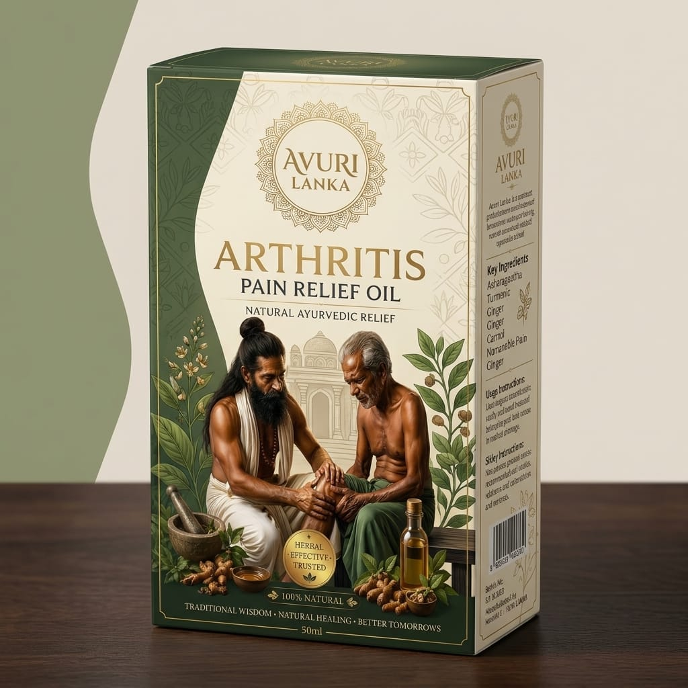

HERBAL WELLNESS
අවුරිලන්කා ආතරිටිස් සන්දි සහන තෛලය
හෙළ වෙදකමේ පාරම්පරික දැනුමෙන් සකස් කළ, සන්ධි හා මාංශපේශී සුවපහසුව සඳහා සත්කාරයක්.
AVURI LANKA ARTHRITIS SANDHI SAHANA OIL
A traditional care formula inspired by the wisdom of Hela Wedakama, created to support joint and muscle comfort.
හෙළ වෙදකමේ පාරම්පරික දැනුමෙන් ආභාසය ලැබූ, දෛනික සන්ධි හා මාංශපේශී සත්කාරය සඳහා සකස් කළ තෛලයකි.
අවුරිලන්කා ආතරිටිස් සන්දි සහන තෛලය, සන්ධි සහ මාංශපේශී ආශ්රිත අපහසුතාවයන් ඇති අවස්ථාවලදී දෛනික සත්කාර ක්රමයක කොටසක් ලෙස භාවිත කිරීමට නිර්මාණය කර ඇත.
ස්වභාවික ශාකසාර අමුද්රව්ය හා හෙළ වෙදකමේ පාරම්පරික සත්කාර පිළිබඳ දැනුම මත පදනම්ව, ශරීරයට සන්සුන් හා සුවපහසු සත්කාර අත්දැකීමක් ලබාදීම මෙහි අරමුණයි.
අවුරිලන්කා විශ්වාස කරන්නේ සුවය යනු එක් නිෂ්පාදනයක් මත පමණක් රඳා පවතින දෙයක් නොවන බවයි. නිවැරදි දැනුම, නිසි සත්කාරය, ශරීරය පිළිබඳ අවබෝධය සහ යහපත් දෛනික පුරුදු සමඟින් තමන්ගේ සෞඛ්යය වෙනුවෙන් වගකීමෙන් කටයුතු කිරීමට මිනිසුන්ට මඟපෙන්වීම අපගේ අරමුණයි.
ඔබේ සුවපහසුව වෙනුවෙන් සත්කාරයෙන් පියවරක්.
Inspired by the traditional wisdom of Hela Wedakama, this oil is thoughtfully prepared for everyday care of the joints and muscles.
AVURI LANKA Arthritis Sandhi Sahana Oil is designed to be used as part of a daily self-care routine when experiencing joint and muscle discomfort.
Inspired by traditional herbal knowledge and the heritage of Hela Wedakama, the oil is created to provide a calm and comfortable care experience for the body.
At AVURI LANKA, we believe wellbeing is not something that depends on a single product. It grows through the right knowledge, mindful self-care, greater awareness of the body, and healthy daily practices. Our purpose is to guide people towards taking greater responsibility for their own wellbeing.
A thoughtful step towards your everyday comfort.